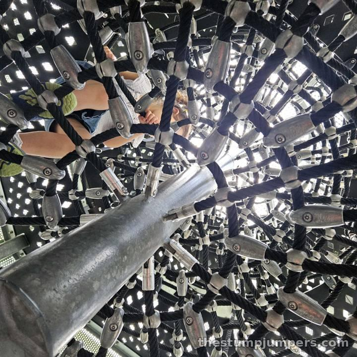
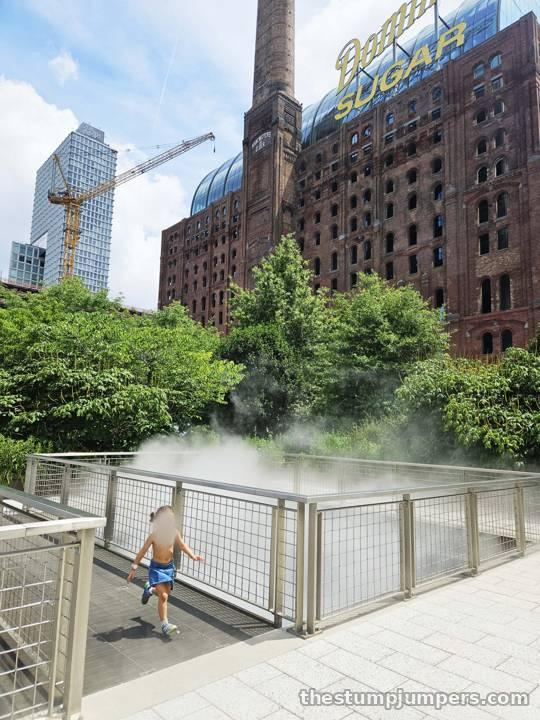
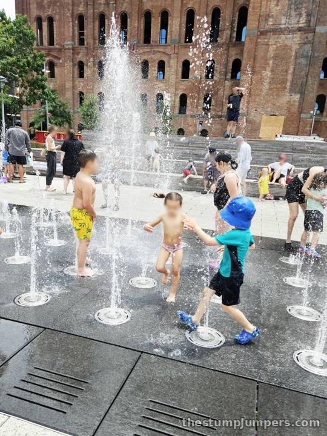
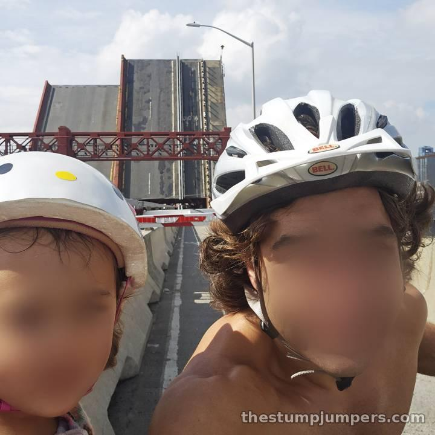
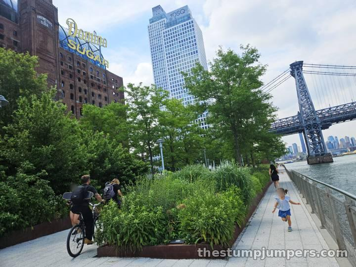
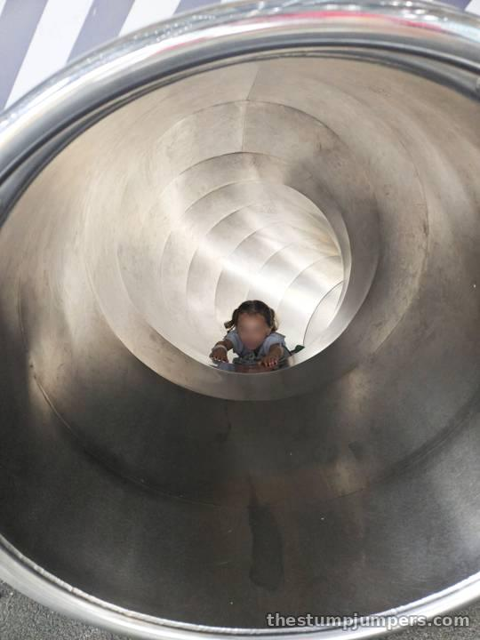
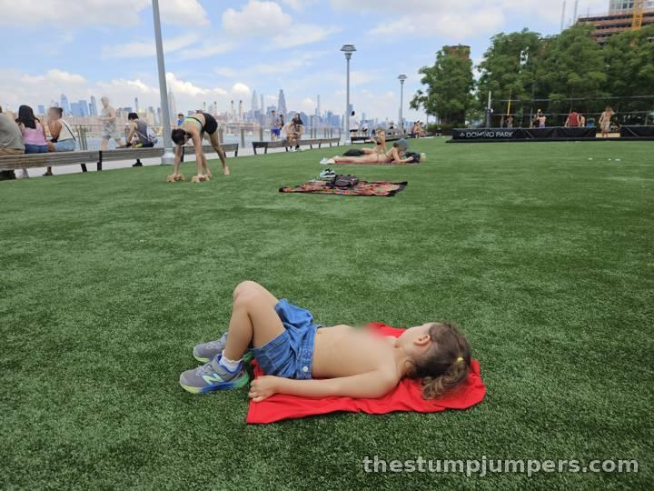
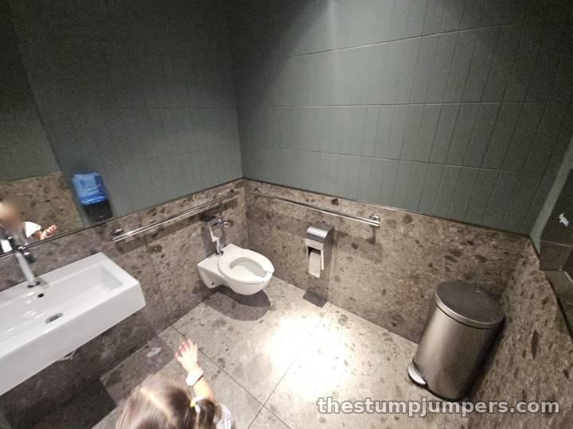

Sweet Stuff on the Waterfront: Domino Park

Domino Park stretches along the Williamsburg waterfront where the Domino Sugar Refinery once stood, and it has a series of playgrounds right on the water with amazing views of the Manhattan skyline. The equipment is a little different from what you'll see elsewhere; it blends right into the industrial look of the old refinery. The main playground, by artist Mark Reigelman, follows the sugar-making process: kids go in as raw sugar cane and come out the other end as sugar cubes. My daughter did not know that, and did not need to.


The clubhouse structures are tall and enclosed, so visibility for parents is low. There's only one entrance, though, so there's nothing to worry about. Except, possibly, the spider-web net inside a mock industrial vacuum, where a kid can get stuck. Pro tip: there's a way to fish a kid out through the bottom. I know because I had to do it.


Don't miss the mist bath along the water, where a cloud of fog seems to rise up from waves crashing on the rocks below. On a hot day it's magic. The splash pad has jets that fire at random, and kids love tearing through them trying to guess which one goes next, while parents enjoy a big seating area right alongside.


The bathrooms are a bit of a walk across the street, but they're large individual stalls and they're spotless. There's plenty for parents to do nearby, and some days there's even a farmers market.


Verdict: very high marks. Worth the trip from anywhere in the city.
The Stump Report
Biking & Running There
By bike: we rode over the Pulaski Bridge (drawbridge in action!) and down the Kent Avenue bike lane, which runs right alongside the park. From Manhattan, the Williamsburg Bridge bike path drops you a few blocks away. On the run: the waterfront path through the park is a flat stretch with skyline views the whole way. By train: J, M, or Z to Marcy Av, or the L to Bedford Av, then walk toward the river. NYC Ferry stops at South Williamsburg, just south of the park.